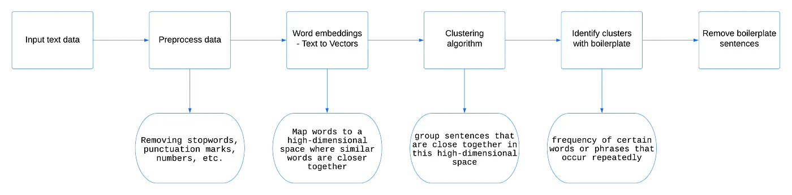
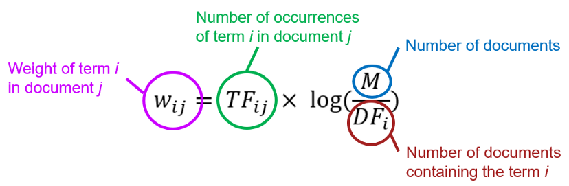

Tokenization
Misc
{kind=link}
{kind=link}
{kind=link}
Terms
- Out-of-Vocabulary (OOV) - Sometimes vocabularies a trimmed to the only the most common tokens. Words that aren’t in the vocabulary get assigned OOV tokens.
- Tokenization - process of splitting a phrase, sentence, paragraph, one or multiple text documents into smaller units. Different algorithms follow different processes in performing tokenization
- Token - output from tokenization — a word, a subword (e.g. prefix, suffix, or root), or even a character.
- Vocabulary - a set of unique tokens in a corpus (a dataset in NLP) that is then converted into numbers (IDs) which helps us in modeling
Preprocessing
- Misc
- Primer on Cleaning Text Data - py code for cleaning
- The Ultimate Preprocessing Pipeline for Your NLP Models - py code for cleaning
- Clusters embeddings to remove “boilerplate language” (i.e. noise) from data
- Parts of Speech (POS) tagging
- ** Cleaning needs to happen before any clustering, POS tagging, Lemmatization or Stemming takes place. **
- Similarly, clustering should happen before POS tagging and lemmatizing, since using the entire text will make the compute extremely costly and and less effective.
- Replace NA values with empty spaces
- Lowercase all text
- Replace digits with words for the numbers
- Remove punctuation
#$%&\’()*+,-./:;?@[\\]^_{|}`~
- Remove emojis
- If you are trying to sentiment analysis, trying to transform emojis into some text format instead of outright removing them may be beneficial
- Spell out contractions
- Strip HTML Tags
- Remove stopwords
- Remove accented characters
- Remove URLs, Mentions (@), hastags (#) and special characters
- Remove whitespace
- Remove boilerplate language (see article)
- Text embeddings are created. The embeddings are clustered to find repeatedly occurring sentences and words and removes them, with an assumption that something that is repeated more than a threshold number of times, is probably “noise”.
- The resultant text is a cleaner, more meaningful, summarized form of the input text. By removing noise, we are pointing our algorithm to concentrate on the important stuff only.
- Article reduces size of text by 88%
- Parts of Speech (POS) tagging
- Labels each word in a sentence as a noun, verb, adjective, pronoun, preposition, adverb, conjunction, or interjection.
- Context can largely affect the natural language understanding (NLU) processes of algorithms.
- Lemmatization and Stemming
- Stemming removes suffixes from words to bring them to their base form.
- Lemmatization uses a vocabulary and a form of morphological analysis to bring the words to their base form.
- Both reduce the dimensionality of the input feature space.
- Lemmatization is generally more accurate than stemming but is computationally expensive
- Lemmatization preserves the semantics of the input text.
- Algorithms that are meant to work on sentiment analysis, might work well if the tense of words is needed for the model. Something that has happened in the past might have a different sentiment than the same thing happening in the present.
- Stemming is fast, but less accurate.
- In instances where you are trying to achieve text classification, where there are thousands of words that need to be put into categories, stemming might work better than lemmatization purely because of the speed.
- Some deep-learning models have the ability to automatically learn word representations which makes using either of these techniques, moot.
{kind=link}
Text Recipes
Misc
Every text preprocessing sequence should probably start with
step_tokenizeand end withstep_tforstep_tfidf- Example sequence of steps: step_tokenize, step_stopwords, step_ngrams, step_tokenfilter, step_tfidf
Models with large numbers (100s) of features increases the opportunity for feature drift (i.e. use step_tokenfilter)
If you have a number of text columns, it’ll be easier to create a char var and use that in the recipe
text_cols <- c("text_col1, "text_col2", "text_col3") step_whatever(all_of(text_cols))
Examine Tokens from recipe
token_list_tbl <- text_recipe %>% prep() %>% juice() # look at tokens created from 1st row of text column (e.g. text_col) token_list_tbl$text_col[1] %>% attr("unique_tokens")- Can use this after every text recipe step to examine the results
Debugging
- “length of ‘dimnames’ [2] not equal to array extent”
- Example: from DRob’s Prediction box office performance
- Using the min_times arg with
step_tokenfilterandstep_stopwordswith one of the tokenized variables resulted in this error.
- Using the min_times arg with
- Example: from DRob’s Prediction box office performance
- “length of ‘dimnames’ [2] not equal to array extent”
step_tokenizetextrecipes::step_tokenize(genres, production_countries, token = 'regex', options = list(pattern = ";"))- Take delimited text and create tokens
- Genres has values like “action;horror;comedy” per row
- Created using function that extract values from json columns
- See script Code >> JSON >> extract-values-from-json-column.R
step_stopwordstextrecipes::step_stopwords(tokenized_var1, tokenizedvar2)- Remove words like “the” and “at”
- custom_stopword_source: Provide a vector of stopwords
- keep: Provide a vector of words you don’t want filtered out
step_ngramCreates ngrams (i.e. combines tokens into n number of words to create phrases)
step_ngram( tokenized_var1, num_tokens = 3, min_num_tokens = 1 )- Example creates uni-gram (aka tokens), bi-grams, and tri-grams (n = 1, 2, and 3)
- Tokens combined (with underscores) sequentially as they occur in the original string
- e.g. Bigram: 1st word combined with 2nd word, then 2nd word combined with 3rd word, etc.
step_tokenfilterUseful for reducing features
- This step can cause the number of features to explode into the thousands, so if your sample size is in the 100s, you’ll need to reduce the number of features
Remove tokens if they have a count below a specified number
textrecipes::step_tokenfilter(genres, production_countries min_times = 50- See above for example of genre variable
- So if “action” doesn’t appear in at least 50 rows of the dataset, a token won’t be created for it
- If you set arg, percentage=T, then min_times can be a percentage
- max_times also available
Only keep tokens with a count in the top_n
textrecipes::step_tokenfilter(genres, production_countries max_tokens = 50- Can use with min/max_times but max_tokens gets applied after min/max times
- In the example, there are 2 text columns (genres, production countries) and max_tokens = 50, therefore 50*2 = 100 columns get created.
- Default = 100
step_tftextrecipes::step_tf(genres, production countries)- Term Frequency Columns; Creates indicator variables for your tokens
- Format: “tf_variableName_tokenName”
- Example: “tf_genres_action”
step_tfidf
Mixture of tf and idf
- Term frequency (tf) measures how many times each token appears in each observation
- i.e. Number of times a word appears in a document, divided by the total number of words in that document
- Inverse document frequency (idf) is a measure of how informative a word is, e.g., how common or rare the word is across all the observations.
- i.e. Logarithm of the number of documents in the corpus divided by the number of documents where the specific term appears
- Weighs down the frequent words and scaling up the rare ones
- i.e. Logarithm of the number of documents in the corpus divided by the number of documents where the specific term appears
- Term frequency (tf) measures how many times each token appears in each observation
The “mixture” seems to be the product of these two values
step_tfidf(var_thats_been_tokenized_and_filtered)- **Strongly advised to use
step_tokenfilterbefore using step_tfidf to limit the number of variables created; otherwise you may run into memory issues**
- **Strongly advised to use
step_dummy_extract- Pull out a pattern and create dummy variablesexample_data <- tribble( ~ language, "English, Italian", "Spanish, French", "English, French, Spanish" ) recipe(~., data = example_data) |> step_dummy_extract(language, sep = ", ") |> prep() |> bake(new_data = NULL) #> # A tibble: 3 × 5 #> language_English language_French language_Italian language_Spanish #> <int> <int> <int> <int> #> 1 1 0 1 0 #> 2 0 1 0 1 #> 3 1 1 0 1 #> # ℹ 1 more variable: language_other <int>-
library(textrecipes) data(tate_text, package = "modeldata") recipe(~ medium, data = tate_text) |> step_textfeature(medium) |> prep() |> bake(new_data = NULL) |> glimpse() #> Rows: 4,284 #> Columns: 26 #> $ textfeature_medium_n_words <int> 8, 3, 3, 3, 4, 4, 4, 3, 6, 3, 3, 3, … #> $ textfeature_medium_n_uq_words <int> 8, 3, 3, 3, 4, 4, 4, 3, 6, 3, 3, 3, … #> $ textfeature_medium_n_charS <int> 48, 14, 14, 14, 16, 16, 19, 14, 22, … #> $ textfeature_medium_n_uq_charS <int> 19, 12, 12, 12, 11, 11, 12, 11, 14, … #> $ textfeature_medium_n_digits <int> 0, 0, 0, 0, 0, 0, 0, 0, 0, 0, 0, 0, … #> $ textfeature_medium_n_hashtags <int> 0, 0, 0, 0, 0, 0, 0, 0, 0, 0, 0, 0, … #> $ textfeature_medium_n_uq_hashtags <int> 0, 0, 0, 0, 0, 0, 0, 0, 0, 0, 0, 0, … #> $ textfeature_medium_n_mentions <int> 0, 0, 0, 0, 0, 0, 0, 0, 0, 0, 0, 0, … #> $ textfeature_medium_n_uq_mentions <int> 0, 0, 0, 0, 0, 0, 0, 0, 0, 0, 0, 0, … #> $ textfeature_medium_n_commas <int> 2, 0, 0, 0, 0, 0, 0, 0, 0, 0, 0, 0, … #> $ textfeature_medium_n_periods <int> 0, 0, 0, 0, 0, 0, 0, 0, 0, 0, 0, 0, … #> $ textfeature_medium_n_exclaims <int> 0, 0, 0, 0, 0, 0, 0, 0, 0, 0, 0, 0, … #> $ textfeature_medium_n_extraspaces <int> 0, 0, 0, 0, 0, 0, 0, 0, 0, 0, 0, 0, … #> $ textfeature_medium_n_caps <int> 1, 1, 1, 1, 1, 1, 1, 1, 1, 1, 1, 1, … #> $ textfeature_medium_n_lowers <int> 43, 13, 13, 13, 15, 15, 18, 13, 21, … #> $ textfeature_medium_n_urls <int> 0, 0, 0, 0, 0, 0, 0, 0, 0, 0, 0, 0, … #> $ textfeature_medium_n_uq_urls <int> 0, 0, 0, 0, 0, 0, 0, 0, 0, 0, 0, 0, … #> $ textfeature_medium_n_nonasciis <int> 0, 0, 0, 0, 0, 0, 0, 0, 0, 0, 0, 0, … #> $ textfeature_medium_n_puncts <int> 2, 0, 0, 0, 0, 0, 0, 0, 0, 0, 0, 0, … #> $ textfeature_medium_first_person <int> 0, 0, 0, 0, 0, 0, 0, 0, 0, 0, 0, 0, … #> $ textfeature_medium_first_personp <int> 0, 0, 0, 0, 0, 0, 0, 0, 0, 0, 0, 0, … #> $ textfeature_medium_second_person <int> 0, 0, 0, 0, 0, 0, 0, 0, 0, 0, 0, 0, … #> $ textfeature_medium_second_personp <int> 0, 0, 0, 0, 0, 0, 0, 0, 0, 0, 0, 0, … #> $ textfeature_medium_third_person <int> 0, 0, 0, 0, 0, 0, 0, 0, 0, 0, 0, 0, … #> $ textfeature_medium_to_be <int> 0, 0, 0, 0, 0, 0, 0, 0, 0, 0, 0, 0, … #> $ textfeature_medium_prepositions <int> 0, 0, 0, 0, 0, 0, 0, 0, 0, 0, 0 , 0, …- Creates a set of predictors that count the number of characters, words, periods, emojis, etc.
Other
Not sure what this weight scheme does and how it helps
step_tokenize(market_category) %>% step_tokenfilter(market_category, min_times = 0.05, max_times = 1, percentage = TRUE) %>% step_tf(market_category, weight_scheme = "binary")
{kind=link}
Tokenization Algorithms
- Word-Based
- Splits a piece of text into words based on a delimiter
- Advantages: meaningful tokens
- Issues:
- Vocabularies can be very large
- Assigns different IDs to the words like “boy” and “boys”
- Causing the model to be heavier and requiring more computational resources
- Solution: Restrict size of the vocabulary to only most common tokens. Tradeoff is that you’re losing information
- Misspelled words in the corpus get assigned an OOV token
- All semantic uses for a word are combined into one representation.
- Example, the word “play” in “I’m going to see a play” and “I want to play” will have the same embedding, without the ability to distinguish context
- Vocabularies can be very large
- Types: space and punctuation, rule-based
- NLP models that use this type:
- Transformer XL (vocabulary = 267,735)
- Word2Vec (?)
- Character-Based
- Splits the text into individual characters
- Language has many different words but has a fixed number of characters. This results in a very small vocabulary.
- English Language
- 256 different characters (letters, numbers, special characters)
- 170,000 words in its vocabulary
- English Language
- Advantages:
- Can create a representation of the unknown words (words not seen during training) using the representation for each character
- Misspelled words can be spelled correctly rather can marking them as OOV tokens and losing information (?)
- Fast and requires less compute resources
- Issues:
- Less meaningful tokens for some languages:
- Characters have meaning in some languages (e.g. Chinese) but not others (e.g. English).
- Tokenized sequence is much longer than the initial raw text (e.g. “knowledge” will have 9 different tokens)
- Less meaningful tokens for some languages:
- Subword-Based
- Splits based on rules:
- Do not split the frequently used words into smaller subwords.
- Split the rare words into smaller meaningful subwords.
- Uses a special symbol to indicate which word is the start of the token and which word is the completion of the start of the token.
- “tokenization” can be split into “token” and “##ization” which indicates that “token” is the start of the word and “##ization” is the completion of the word.
- Different models use different special symbols (Wordpiece uses ##)
- Advantages:
- Meaningful tokens but with a more managable vocabulary size
- Possible for a model to process a word which it has never seen before as the decomposition can lead to known subwords
- Types
- WordPiece used by BERT and DistilBERT
- Unigram by XLNet and ALBERT
- Bye-Pair Encoding by GPT-2 and RoBERTa
- Splits based on rules:
Engineering
- e.g. Comments on a social media platform
- Sentiment
- Categorize each comment as positive, negative, or neutral
- Number of new comments
- Create consumer profiles
- Clustering based on consumer characteristics and use a feature
- Social media characteristics
- Location of comments
- Location tags
- Language spoken
- Biographical data in profile
- Location of comments
- Shared links